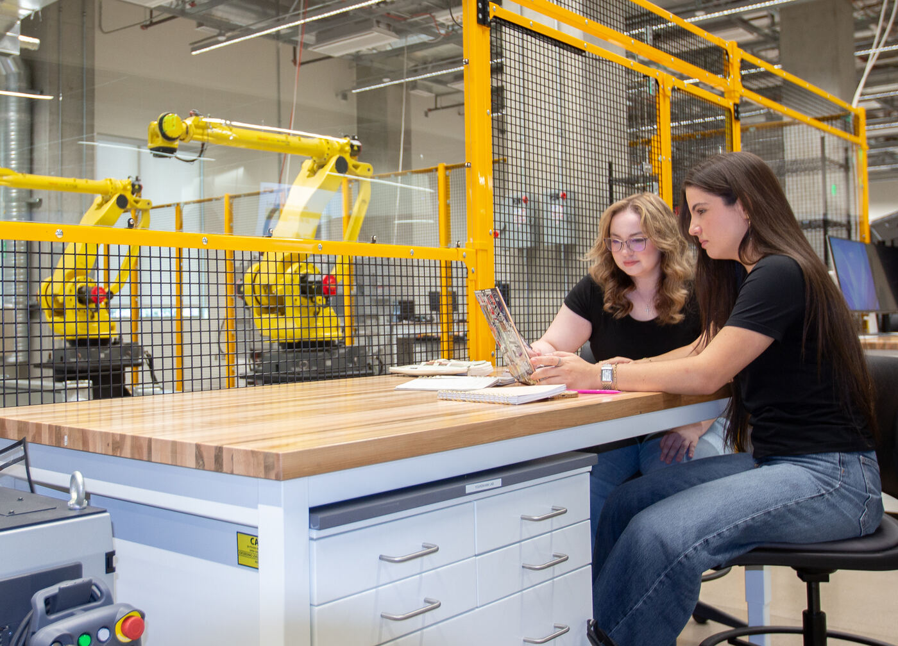

Coursework in progress in the lab.
Taught in the lab
Graduate course
RAS 545 - Robotic Systems I
A core course of ASU's Robotics and Autonomous Systems master's
program, taught by Prof. Sangram Redkar. Its guided laboratories
run on this lab's Dobot arms, Isaac Sim workstations, and ROS 2
tooling - the full guides live on this site.
See the instructional labs ↓
Industry training
PLC and automation training
Hands-on programmable logic controller and industrial automation
training delivered by the lab's teaching team for industry
partners, using the lab's Allen-Bradley PLC workbenches and
robot cells.
From the RAS and manufacturing curriculum
The lab sits in the School of Manufacturing Systems and Networks,
whose Robotics and Autonomous Systems and manufacturing programs
include these related courses (program curriculum, per the school's
graduate degrees page):
- RAS 546 - Robotic Systems II
- RAS 550 - Mechatronic Systems
- RAS 557 - Foldable Robotics
- RAS 585 - Machine Learning and AI
- MFG 524 - Engineering Computing with Python
- MFG 598 - Programming of Industrial Robotics System
- MFG 598 - Additive Manufacturing
- MFG 598 - CNC Computer Programming
The university's Robotics and Autonomous Systems courses page
has the full program structure and elective lists.